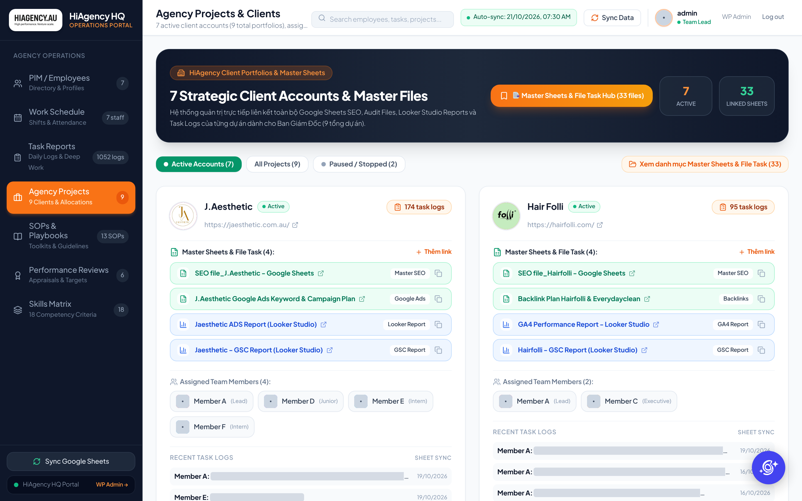

03 / Case study · Internal CRM · hq.hiagency.au
HiAgency HQone portal forthe whole agency.
A self-built operations portal with a WordPress front-end. Its data is synced from the team’s Google Sheets on a schedule, or on demand with the Sync Data button.
1,052task logs synced
7active client accounts
33linked sheets & reports
13SOP & toolkit entries
hq.hiagency.au · Agency Projects

Problem
The agency’s operating data lived in separate Google Sheets: staff, monthly shifts, daily task logs, client master files, SOPs and reviews. Leadership had no single place to see who works on which client, what got done, or where each client’s reports live.
System
- Sheets stay the source of truth. The team keeps working in Google Sheets, and HQ pulls the data on auto-sync or when someone presses Sync Data.
- Seven modules: Employees, Work Schedule, Task Reports, Agency Projects, SOPs & Playbooks, Performance Reviews and Skills Matrix.
- Linked out, not duplicated. Each client card links its Sheets, Looker Studio and GSC reports, and each SOP links its GitHub repo.
Results
1,052task logs · 94% avg deep-work score
11clients · 10 task categories
154workdays tracked in 10/2026 (95 on-site · 59 remote)
13SOP kits (9 active · 4 suggested), 6 categories
18weighted skill criteria, Intern → Senior
Module tour
Tab by tab
Privacy: staff names, photos, the admin username, task-log text and appraisal outcomes are blurred. Client names are already public elsewhere on this site. Browser chrome has been cropped.